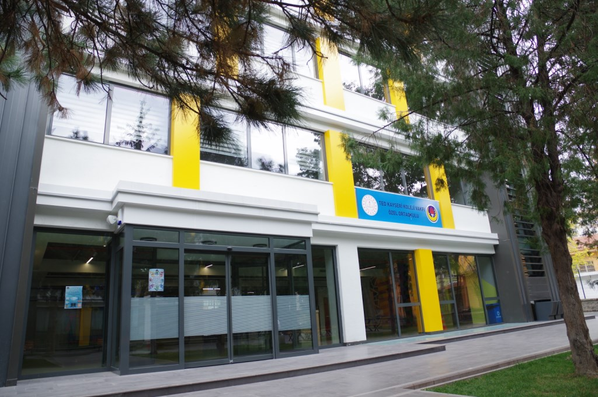

TED MİDDLE SCHOOL

As TED Kayseri College teachers and management, we closely follow the social, cognitive, physiological and academic change and development processes of all our students during the secondary school years, when our students gradually stepped from childhood to youth, started to stand on their own feet by interacting with many branch teachers, and learned to take more responsibility. . Our biggest goal is; In these years when the personalities of our students are shaped, it is to raise creative, questioning, original thinking, sensitive and happy individuals who express themselves correctly, internalize what they have learned and blend them with daily life skills, by considering their individual differences and teaching them to respect differences. In line with these goals, in addition to the National Education curriculum, in the light of Atatürk's principles and reforms, with its strong academic staff, programs specific to the international BTEC accreditation, which are only available in TED Schools, are implemented in our school. In addition to preparing environments that allow our students to realize their 21st century skills with project-based, student-centered teaching methods and educational programs based on scientific thinking and far from rote learning, they also determine their abilities in social, cultural, artistic and sports fields in extracurricular activities and constantly improve themselves, enable them to interact.